Mechanisms
10 kinematic mechanisms · 78 printable parts
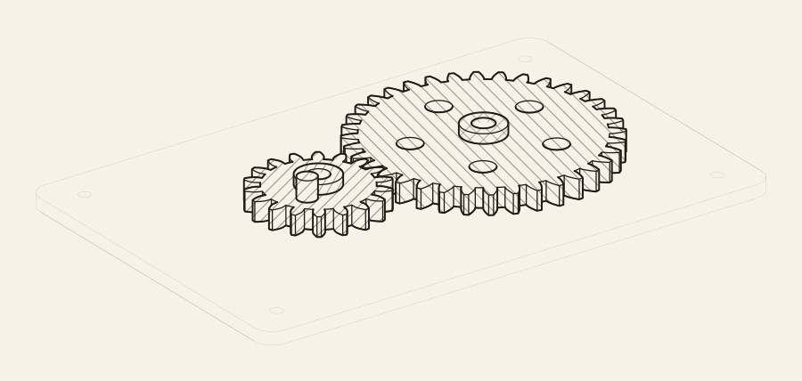
Spur gears
Transmits continuous rotation between parallel shafts with precise whole-number speed and torque ratios.
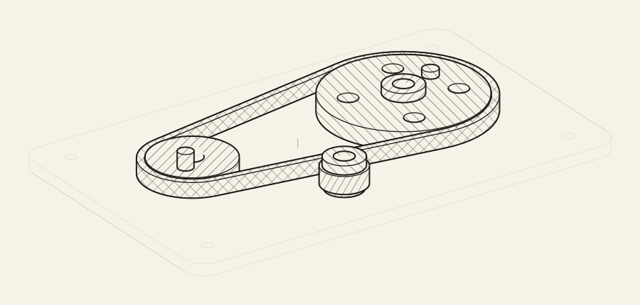
Belt and pulley drive
Transmits smooth, quiet rotary motion across wide shaft spans with zero backlash.
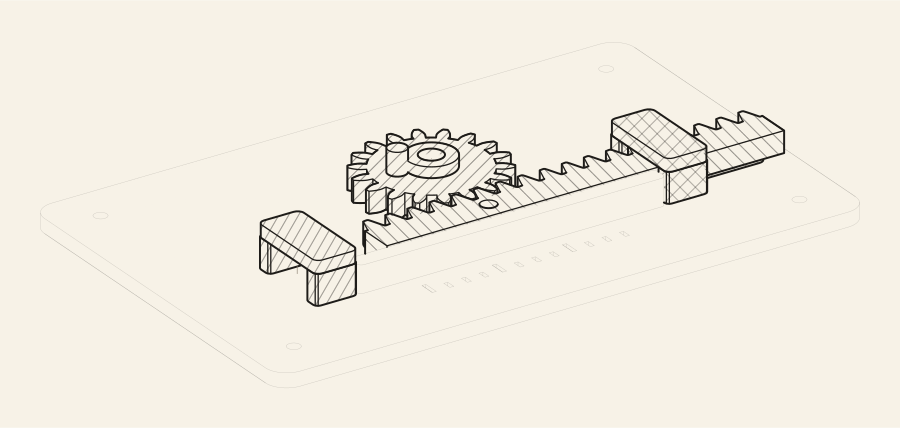
Rack and pinion
Converts rotary shaft motion into straight-line travel for steering racks, CNC gantries, and linear stages.
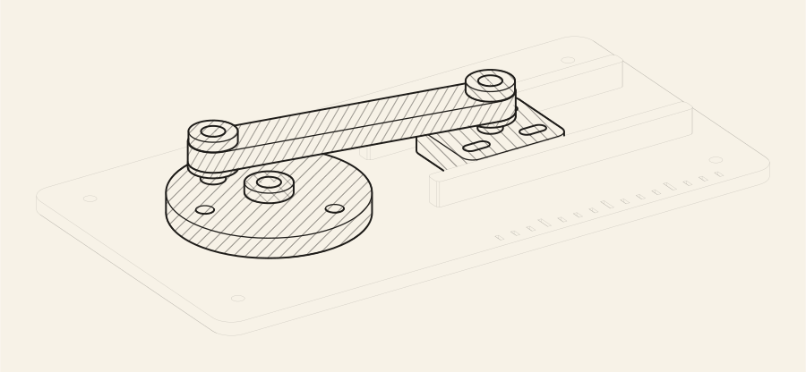
Crank and slider
Transforms continuous rotation into reciprocating linear piston motion for engines, pumps, and compressors.
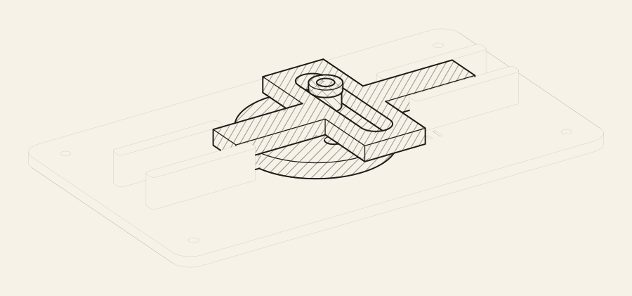
Scotch yoke
Converts rotational motion into pure harmonic linear oscillation without angular connecting-rod distortion.
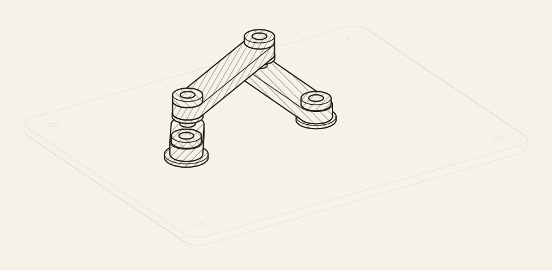
Four-bar linkage
Turns continuous rotation into sweeping oscillating arcs for windshield wipers, deployable linkages, and steering geometry.
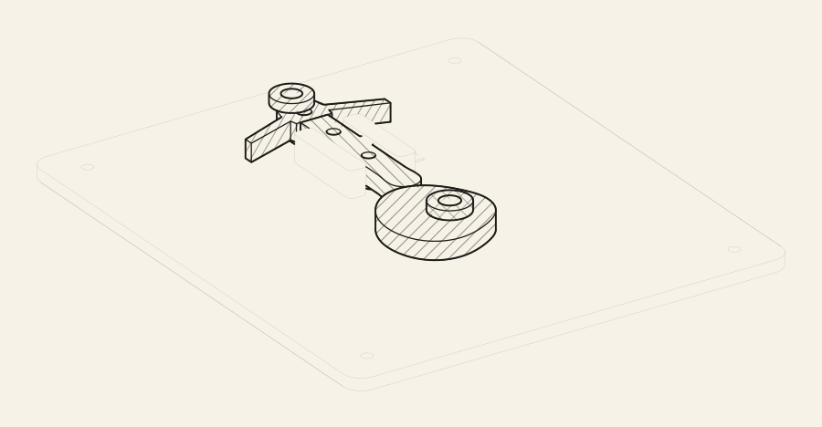
Cam and roller follower
Translates steady rotation into custom lift, dwell, and timed motion profiles for automation and valve trains.
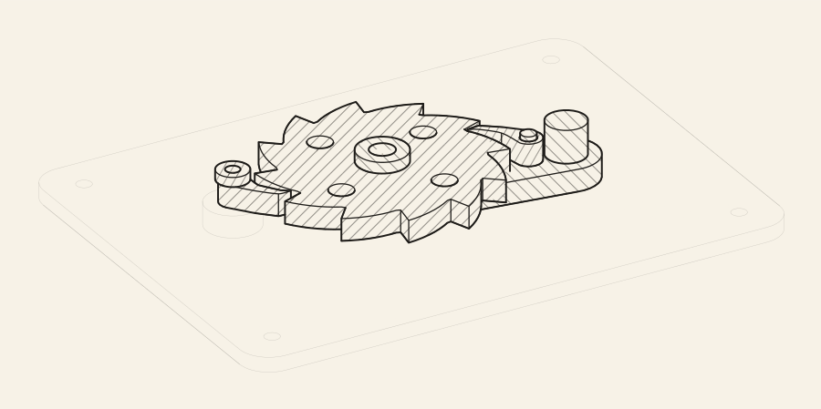
Ratchet and pawl
Allows rotation in only one direction while preventing reverse backdrive for winches, jacks, and ratchets.
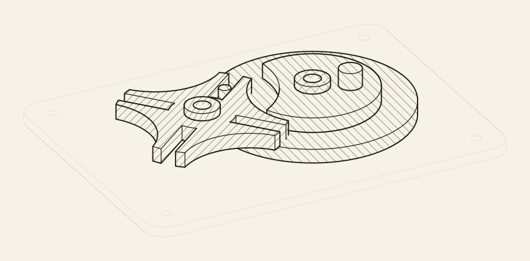
Geneva indexer
Translates continuous rotation into discrete intermittent stepped dwells for film projectors and rotary tool changers.
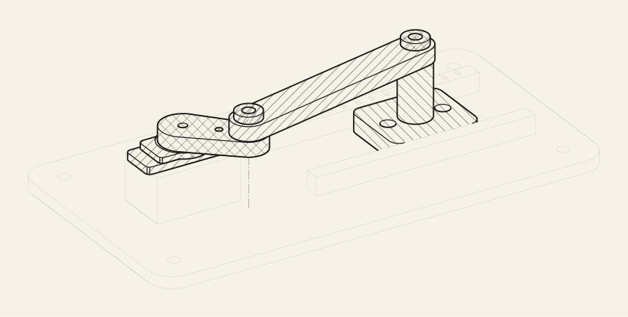
Servo crank
Translates bounded 180° hobby servo rotation into precise linear positioning for animatronics and robotics.
Motors & Actuators
Cutaway demonstrators with live magnetic field vectors, Lorentz torque, and signal oscilloscopes
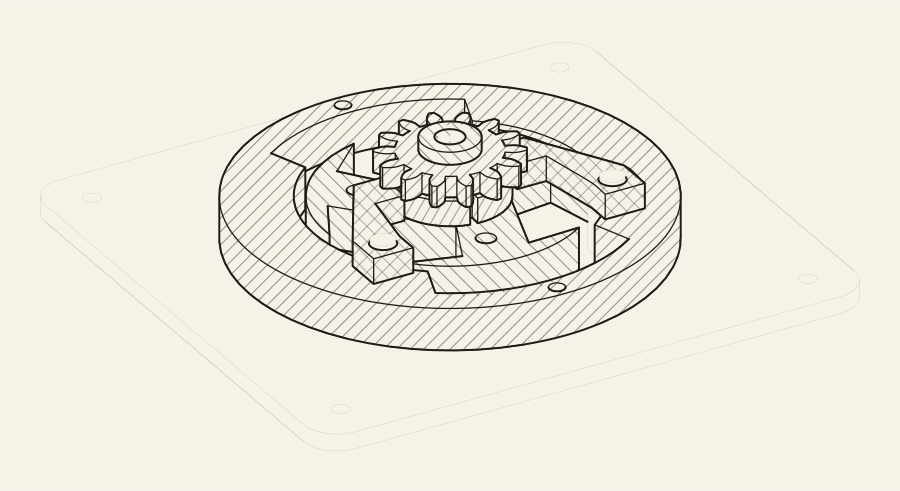
Brushed DC motor
High-speed continuous electric motor driven by DC voltage, for wheels, propellers, and centrifugal pumps.
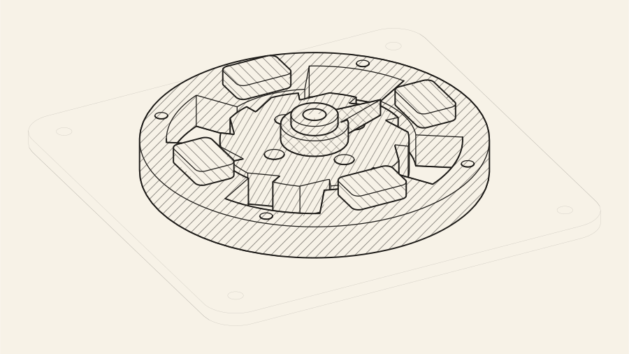
Bipolar stepper motor
Provides precise open-loop discrete angular positioning in 1.8° increments for 3D printers and CNC machines.
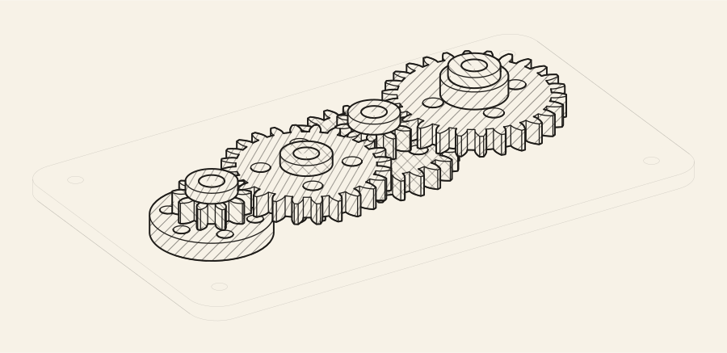
DC gearmotor & encoder
Compound spur reduction gearbox delivering high output torque with integrated quadrature encoder feedback.
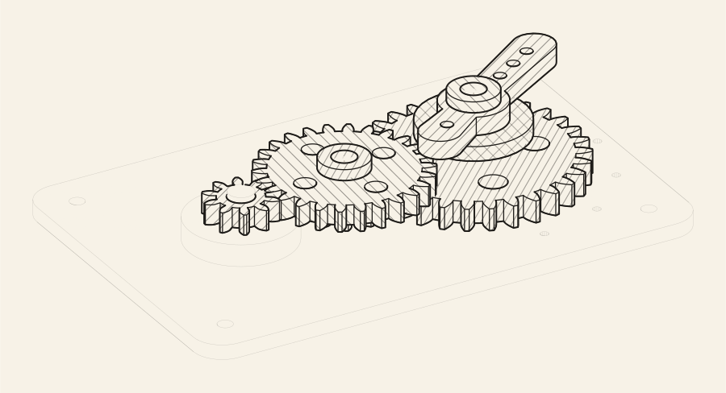
Positional servo motor
Closed-loop geared actuator holding exact angular positions (0–180°) via PWM pulse control.
Comparing DC, Gearmotor, Stepper, and Hobby Servo
| Property | Brushed DC Motor → | DC Gearmotor & Encoder → | Bipolar Stepper Motor → | Positional Hobby Servo → |
|---|---|---|---|---|
| Electromagnetic & mechanical law | Brushes reverse coil current every 180° so Lorentz torque $\tau = N B I A \sin\theta$ stays unidirectional; back-EMF $V_{\text{bemf}} = k_e\omega$ opposes voltage. | Cascaded compound spur stages multiply ratio $G = R_1 R_2 R_3$: output speed $\omega_{\text{out}} = \omega_m / G$, torque $\tau_{\text{out}} = \eta G \tau_m$, and rear encoder resolution multiplies by $G$. | Two orthogonal stator phases $(I_A, I_B)$ rotate magnetic field $\theta_B = \text{atan2}(I_B, I_A)$ in discrete steps; rotor teeth align to minimize reluctance. | Internal comparator measures error $e = \theta_{\text{cmd}} - \theta_{\text{pot}}$ between 50 Hz pulse width and feedback potentiometer, driving an H-bridge proportionally ($V_m = K_p e$). |
| Native motion | Continuous high-speed rotation (3,000–12,000 RPM), very low torque | Continuous high-torque rotation (30–300 RPM), multi-turn closed-loop capable | Continuous or discrete stepped rotation (200 steps/rev, 1.8°/step) | Bounded angular arc (typically 0°–180°), geared down ~180:1 to ~60 RPM |
| Control signal | PWM duty cycle (analogWrite 0–255) sets speed; H-bridge sets polarity |
PWM + H-bridge for drive; 2-channel 90° Quadrature (`CHA`/`CHB`) interrupts for PID feedback | STEP / DIR pulses — each rising edge advances one exact angular quantum | 50 Hz pulse width — 1000 µs (−90°), 1500 µs (0°), 2000 µs (+90°) |
| Position feedback | Open-loop (no built-in angle sensing) | Incremental quadrature Hall/optical encoder on fast motor tail shaft (`~360+` counts/out rev) | Open-loop detent counting (exact unless stalled past holding torque) | Closed-loop internal potentiometer coupled to the output spline |
| Typical driver IC & Specs | DRV8833 ↗, TB6612FNG ↗ | TB6612FNG ↗ + Arduino `attachInterrupt()` | A4988 ↗, TMC2209 Chopper | Built-in PCB (driven directly from 1 Arduino pin + 5V rail) |
| Best mechanisms to pair with | Belt & Pulley, high-speed fans & flywheels | Crank & Slider, Cam & Follower, Scotch Yoke, Four-Bar Linkage | Rack & Pinion, Geneva Indexer, Indexing Feeds | Servo Crank, Four-Bar Linkage, Crank & Slider |
Key Motor Terms & Formulas: RPM, Torque, Load & Signals
Revolutions Per Minute measures no-load shaft speed. Converted to angular velocity $\omega$ (rad/s) for physics equations. Mechanical power is $P = \tau \cdot \omega$.
Rotational force. Stall torque is maximum torque output at 0 RPM; rated torque is safe continuous limit before thermal overheating. $1\text{ N}\cdot\text{m} \approx 10.2\text{ kg}\cdot\text{cm}$.
Opposing resistance torque on the output shaft. Increasing load slows the motor, lowering back-EMF so current rises to match the required torque.
Generator voltage induced by spinning coils in a magnetic field that opposes supply voltage. Net driving voltage across the coil is $V_{\text{net}} = V_{\text{avg}} - V_{\text{bemf}}$.
A gearbox divides speed $\omega_{\text{out}} = \omega_m / G$ while multiplying torque by $\eta \cdot G$, where $\eta \approx 90\text{--}95\%$ per spur gear mesh.
At stall ($\omega = 0$), $V_{\text{bemf}} = 0$ so current jumps to stall current $I_{\text{stall}} = V/R_{\text{coil}}$, converting 100% of power into coil heat.
DC & gearmotors use high-frequency PWM duty cycle to vary average voltage/speed; hobby servos read absolute 50 Hz pulse duration to command shaft position.
Quadrature encoders count all rising and falling edges of channels A & B ($4\times$ decoding), giving sub-degree precision per output turn.
Fabrication Standards
3D print tolerances, modular Z-stack, and 1:1 mm laser-cut sheet specifications
Z-layersBaseplate (`4 mm`) stays rigid; moving bodies (`6 mm`) step in `8 mm` vertical tiers (`layerPitch`), leaving a `2 mm` friction-free axial gap between stacked parts.
TolerancesRunning fit (`+0.30 mm` radial) allows parts to spin freely right off the bed; press fit (`-0.05 mm`) locks retainer caps on posts by plastic hoop stress.
CouplingDriver gears and cranks can print with direct bores for NEMA 17 (5mm D) ↗, N20 (3mm D) ↗, SG90 (4.8mm) ↗, or MG996R (5.8mm) ↗.